Префектура Эхимэ · остров Омисима · архитектура
Музей архитектуры Тоё Ито на острове Омисима: два здания над Внутренним морем
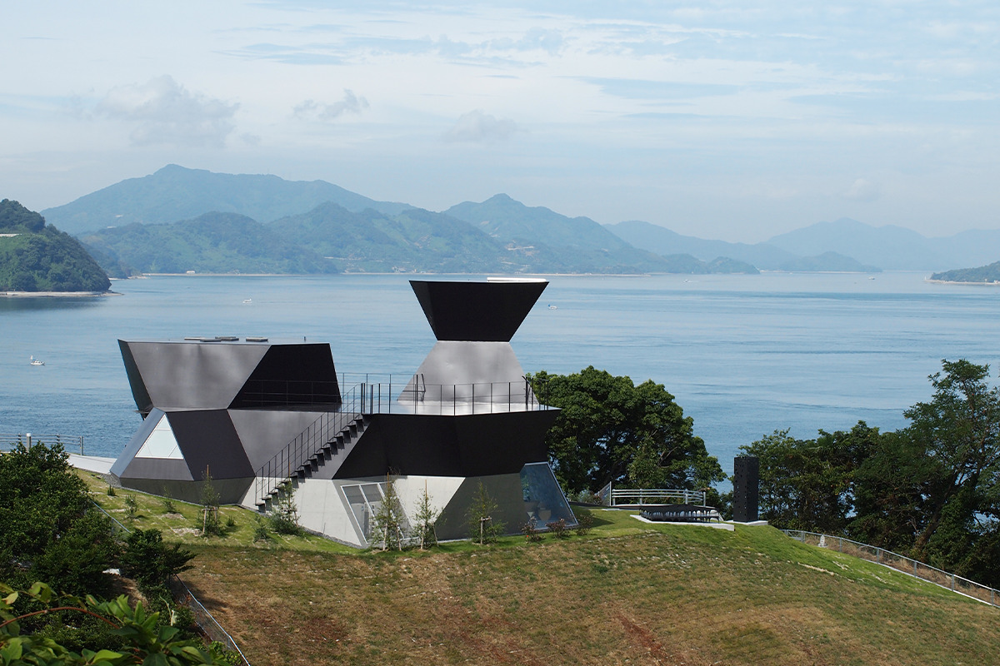
На склоне среди мандариновых садов стоит здание, похожее на готовый к отплытию корабль. Это первый в Японии музей, посвящённый архитектуре, и его автор Тоё Ито построил его на острове, который однажды его поразил.
Музей
Два здания
Музей состоит из двух построек. Первая это «Стальная хижина»: несколько многогранников из стальных листов соединены между собой, как кристаллы. Внутри входная зона, три выставочных зала, салон для отдыха и терраса. Каждая грань собрана из равносторонних треугольников и квадратов со стороной три метра, а стальные листы толщиной шесть миллиметров сварены с каркасом, поэтому граница между полом, стенами и потолком здесь стирается.
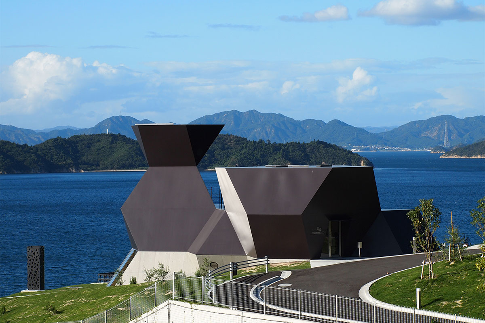
Вторая постройка это «Серебряная хижина», где воссоздан прежний дом архитектора.
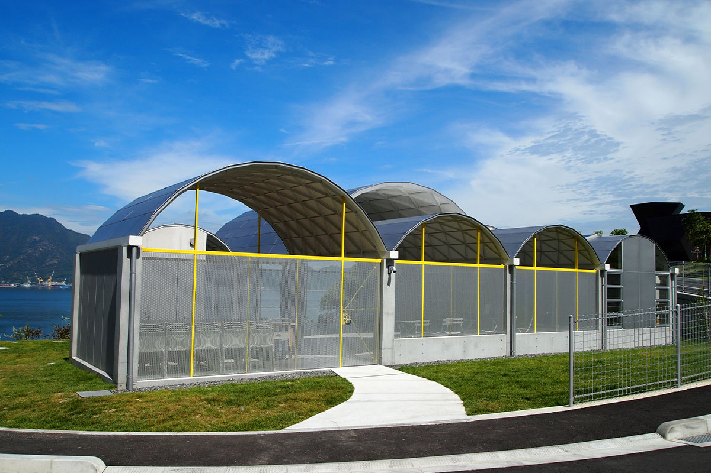
Архив
Что внутри
Под металлическими сводами, которые опираются на бетонные колонны с шагом 3,6 метра, находятся читальный зал с архивом и мастерская под открытым небом. Здесь хранится архив Тоё Ито: около 155 проектов, отобранных самим архитектором.
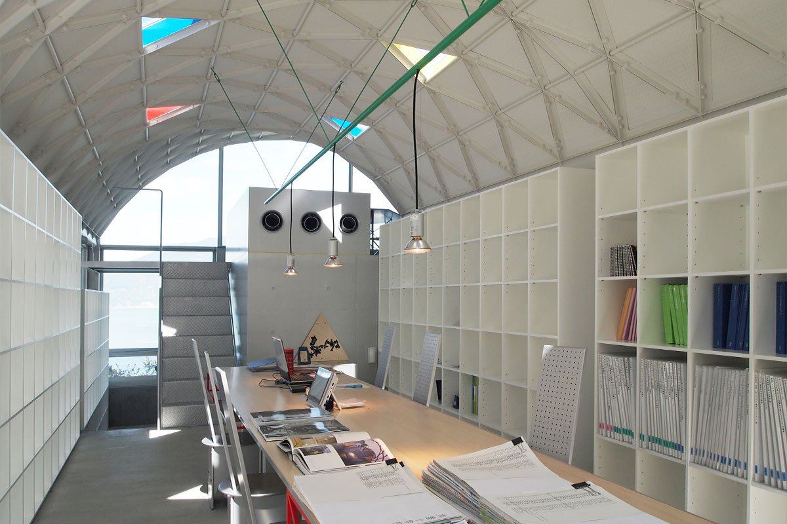
Отдельного внимания заслуживает мебель: в музее выставлены предметы, стоявшие в прежнем доме Ито. На территории также установлены крупные макеты под открытым небом.
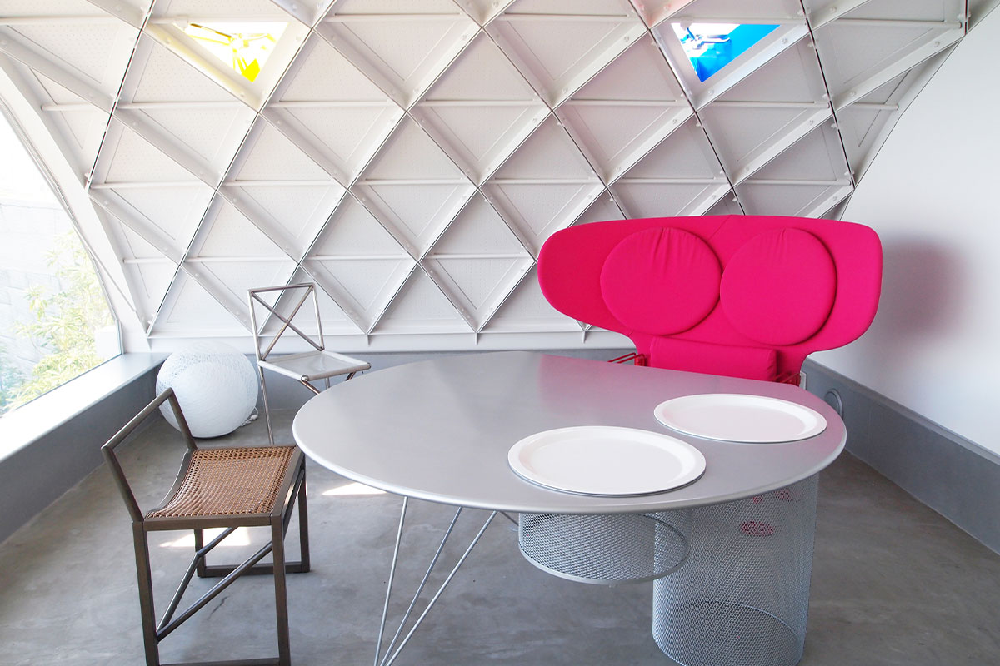
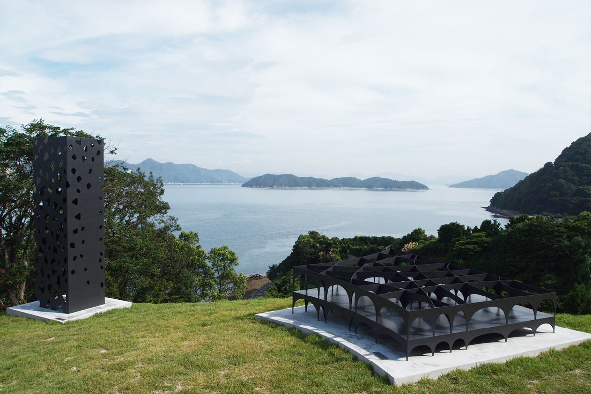
В читальном зале можно поработать с книгами и папками. Из окон открывается вид на Внутреннее море и острова.
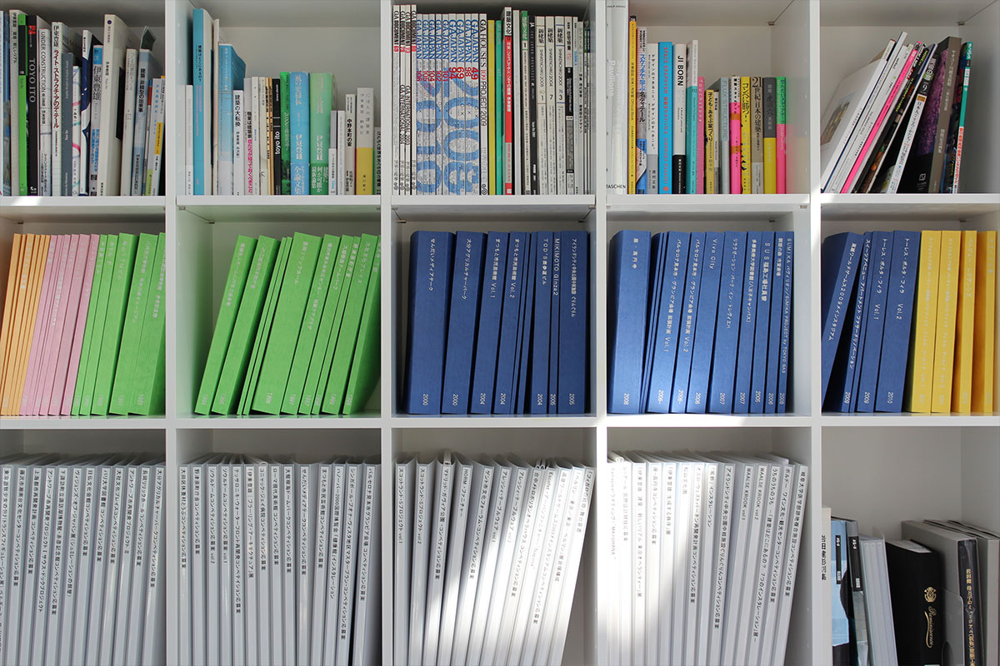
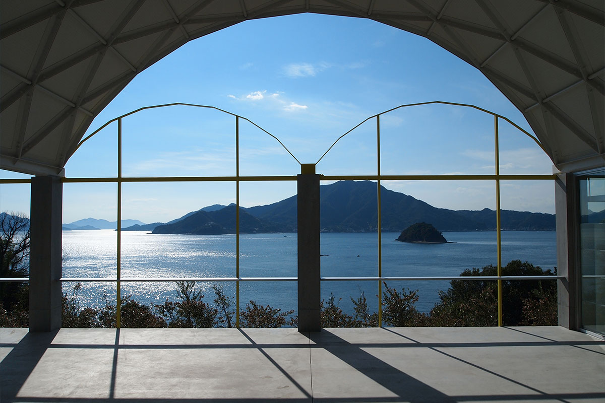
Остров
Почему Омисима
Музей стоит на острове Омисима, самом большом в Эхимэ, на дороге Симанами-кайдо между Имабари и Ономити.
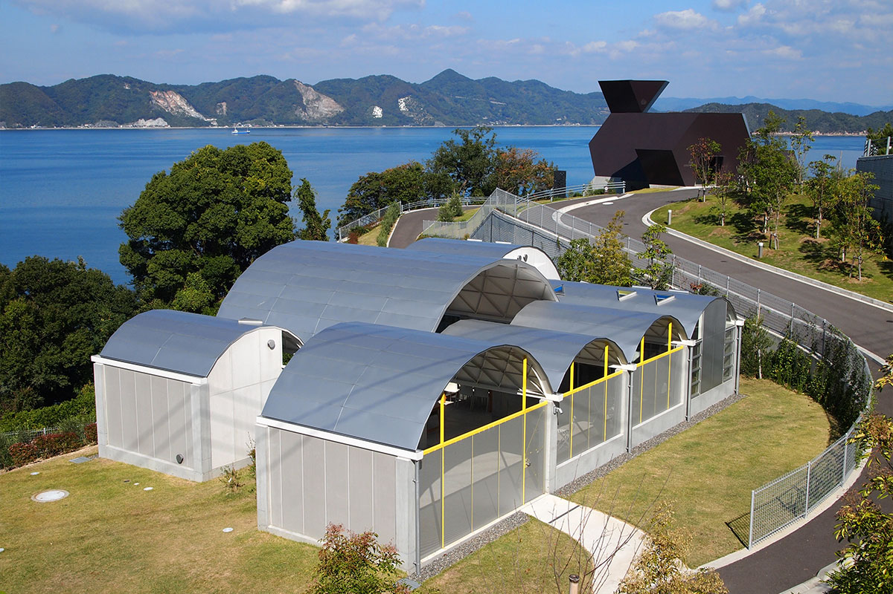
Остров называют островом богов: здесь находится святилище Оямадзуми, которому подчиняются около десяти тысяч святилищ по всей стране. Здешняя красота и поразила Тоё Ито (родился в 1941 году), архитектора и лауреата Притцкеровской премии, автора «Медиатеки Сэндай» и оперного театра в Тайчжуне.
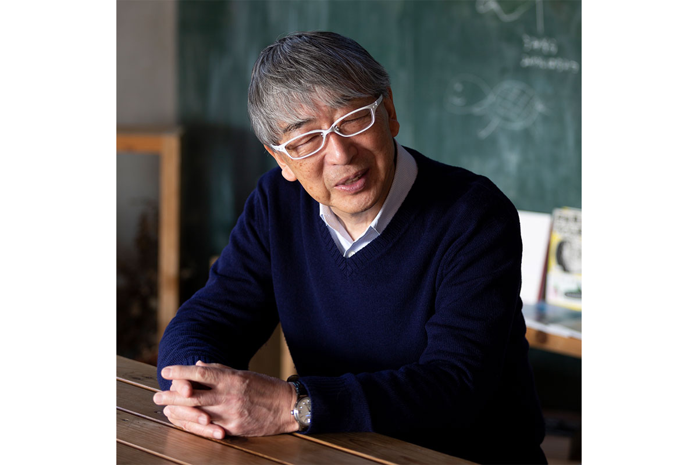
«Как только мы вместе с партнёрами ступили на этот остров, красота и его странная сила ошеломили меня. Я почувствовал скрытый потенциал земли, будто дающий знать о себе дух места», вспоминает Ито.
Проект
Дом для всех и винодельня
Музей открылся в 2011 году и стал первым в Японии музеем архитектуры. Тогда же Ито основал в Токио архитектурную школу и стал приезжать с учениками на остров; некоторые из них переехали сюда насовсем.
Одним из проектов школы стал «Минна-но-иэ», общий дом в перестроенном пустующем здании у дороги к святилищу Оямадзуми. Здесь проводили встречи, готовили из местных продуктов и обменивались вещами. Весной 2021 года дом закрыли, а позже в нём разместились офис и магазин винодельни.
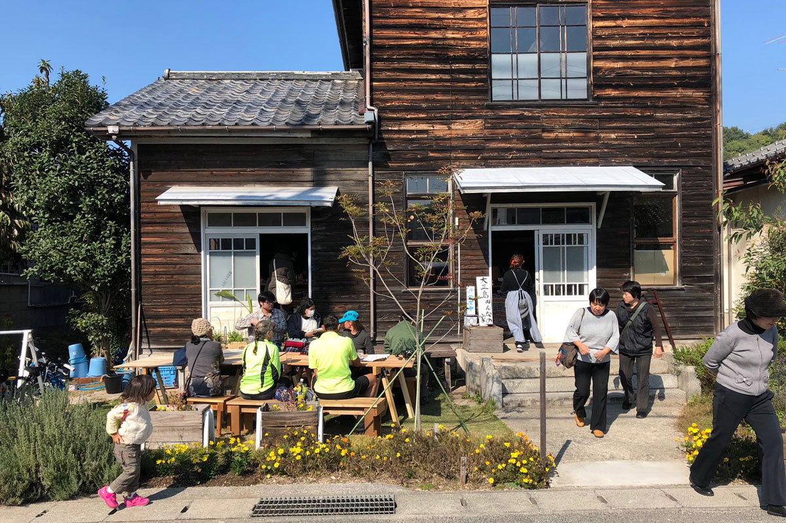
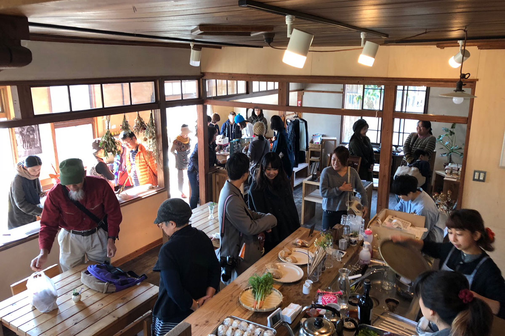
Винодельня «Минна-но вайнари» стала первой на острове. Заброшенные мандариновые сады взяли в аренду и перевели на винные сорта винограда, а в 2019 году построили винодельню: вино здесь делают полностью из местного винограда.
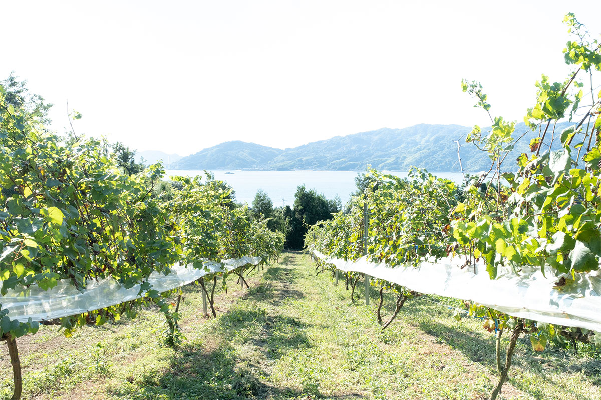
Музей архитектуры Тоё Ито
- Адрес
- префектура Эхимэ, Имабари, Омисима-тё Урадо, 2418
- Телефон
- +81 897-74-7220
- Часы работы
- 9:00–17:00
- Выходные
- понедельник, если понедельник праздничный, музей закрыт на следующий день; с 27 по 31 декабря
- Цены
- взрослый 840 иен, студенческий 420 иен, учащиеся старших классов и дети до 18 лет бесплатно
- Как добраться
- около 25 минут на машине от съезда Омисима дороги Симанами-кайдо; около 3 минут пешком от остановки «Токоро-музей»
- Сайт
- tima-imabari.jp
Фото: Мицумаса Фудзицука.